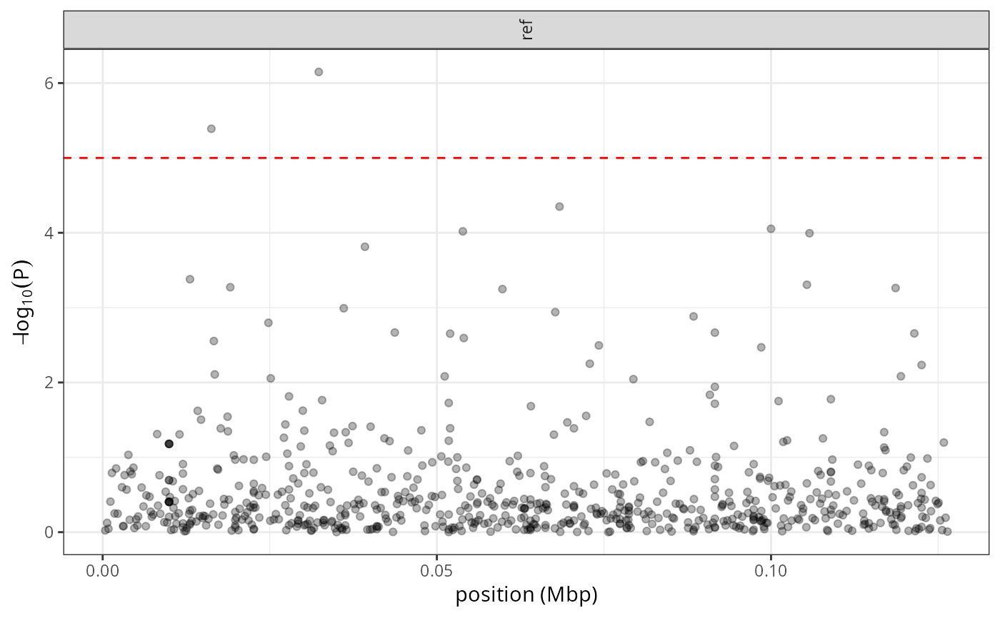
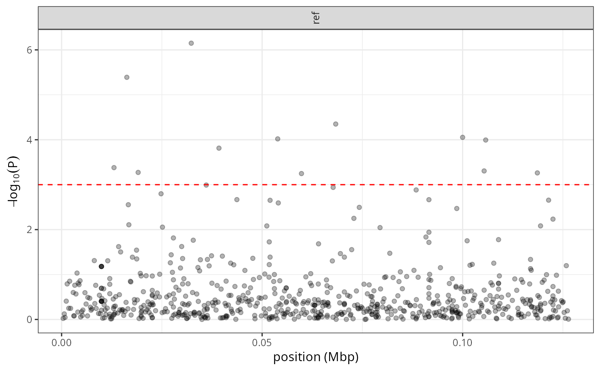

Manhattan plot with all tested snarls
manhattan_plot.RdGenerate a Manhattan plot showing the p-values across the pangenome.
Usage
manhattan_plot(
assoc,
p_threshold = 1e-05,
output_file = NULL,
chr_order = NULL,
show_all_points = FALSE,
show_top_points = 0,
wrap_by_rows = 1,
no_plotting = FALSE
)Arguments
- assoc
Either the data.frame imported by *import_assoc*, or the path to STOAT's output (*assoc.pvalues.tsv.gz)
- p_threshold
P-value threshold for the horizontal significance line (default: 1e-5).
- output_file
If not NULL, the name of the output image where to save the plot (image type guessed from the file name).
- chr_order
list of chromosome names in the desired order for the plot. If NULL, will try to guess.
- show_all_points
should we plot all the points? Default is FALSE (cluster close-by points instead). TRUE is slower (and heavier in PDF) for large genomes.
- show_top_points
how many top associations should be shown as single points? Default is 0.
- wrap_by_rows
how many rows to wrap the chromosome panels. Default: 1 (no wrapping)
- no_plotting
if TRUE, no graph is plotted and the ggplot/gtable is just returned. Only useful in very specific situations, with multi-row plots and where you want to handle the plotting yourself.
Examples
# prepare the filename
assoc_file = system.file('extdata/stoat.quantitative.assoc.pvalues.tsv.gz', package='StoatPlot')
# manhattan plot from the filename (will load the file internally)
manhattan_plot(assoc_file, show_top_points=1000)

# -------------------------------------
# import the association results first
assoc = import_assoc(assoc_file)
# then do a Manhattan plot (recommended for large dataset).
# Also change the P-value threshold
manhattan_plot(assoc_file, p_threshold=1e-3)
